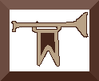

La Storia
La storia dei frammenti danteschi di Verzuolo inizia alla fine del XIX secolo quando il farmacista Agostino Savio, intellettuale appassionato di libri antichi, mentre cataloga l’archivio storico del Comune ed esamina il volume degli Ordinati del 1603, è attratto dal foglio che lo avvolgeva. Si accorge che è una pergamena che reca passi tratti dalla Divina Commedia.
Una prima analisi dei frammenti viene fatta dallo storico piemontese Ferdinando Gabotto che nel 1898 rileva la presenza di 4 fogli ed un dossale che dovevano fare da copertina.
Questa importante scoperta rimase sconosciuta agli studiosi per circa vent’anni, quando nel 1921 il professor Aldo Colombo ne rivelò l’esistenza allo studioso dantista Vittorio Cian, docente universitario torinese.
In occasione del VI centenario dalla morte del sommo poeta, l’Università di Torino richiese il prestito delle pagine manoscritte verzuolesi, per farne uno studio approfondito. Datò i frammenti al 1350 e li attribuì ad una mano dell’Italia nord-orientale che guardava ad un esemplare del centro Italia. La comunità intellettuale verzuolese, dopo un anno che i frammenti sostavano a Torino, ne richiese la restituzione ed in prima linea si schierò Giovanni Fissore, socio del Mulino Fissore-Sandri di Verzuolo.
Antiquario per passione, riottenute le pagine del codice, le fotografò e le raccolse in piccolo volumetto che nel 1922, in occasione delle nozze del figlio Romano, regalò a tutti gli invitati


Negli anni successivi i frammenti, conservati nell’archivio comunale, non godettero di particolari attenzioni dagli studiosi, ma Agostino Savio tra il 1921 e il 1936, anno della sua morte, continua la sua ricerca e trova altri documenti che fungevano da copertina del Libro dei Conti del 1603. Questi vengono fotografati e custoditi in un album fotografico presso la Biblioteca di Cuneo con la scritta “Dono di Giovanni Fissore”. La sorpresa è che il numero dei frammenti è raddoppiato, ma l’élite culturale verzuolese non diffonde questa notizia, se non ad una ristretta cerchia
L’attenzione si riaccese nel 1965 in occasione dei 700 anni dalla nascita di Dante, quando lo studioso Francesco Mazzoni tenne una conferenza, citando, tra il patrimonio dantesco custodito in Piemonte, i frammenti verzuoles
La Biblioteca Civica di Torino allestì una mostra bibliografica commemorativa in cui furono esposti i frammenti in questione
Negli anni successivi i frammenti rimasero slenti nell’archivio comunale di Verzuolo.
Nel 1991 l’ACV Associazione Culturale Verzuolese e promosse la divulgazione tramite una breve pubblicazione, realizzata da Adriana Muncinelli e Paolo Pezzano, studiosi locali, che ne ricostruiva la vicenda storica e ne proponeva la trascrizione.
Nel 2001 il professor Marco Piccat ne ripropone uno studio filologico.
Nel 2014-2016 Giulia Marengo ne fa uno studio critico nella tesi di laurea triennale e magistrale.